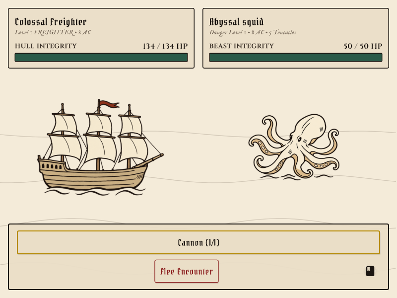

30 artwork tests passed, including transparency and battle rendering at wide and compact sizes.
Squid — Sucker Placement Correction
Removed the bottom-centre sucker row you marked at 59.3%, 75.1%. Added three suckers to the lower-left tan underside at 35.2%, 72.1%.
Full collection · Saved path and exact edit prompt


